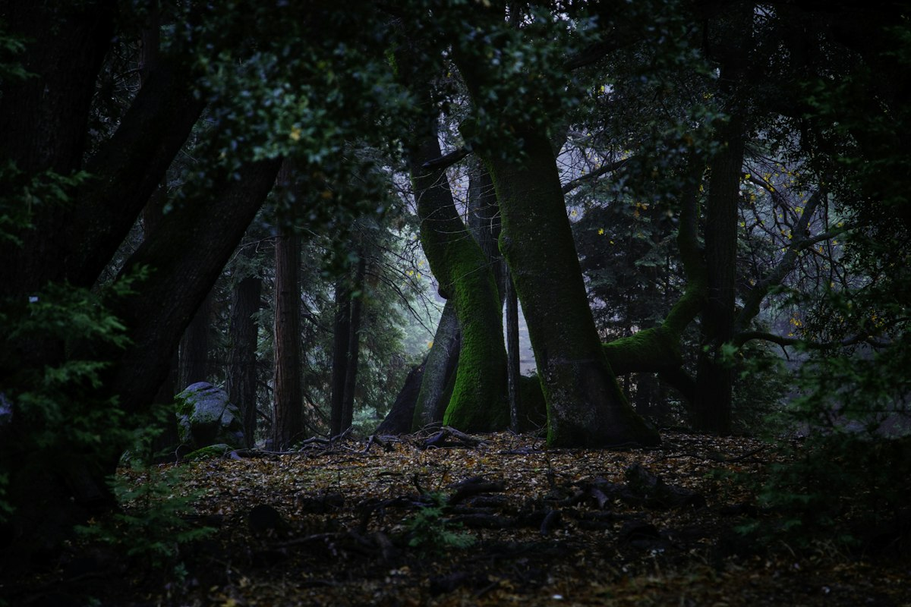
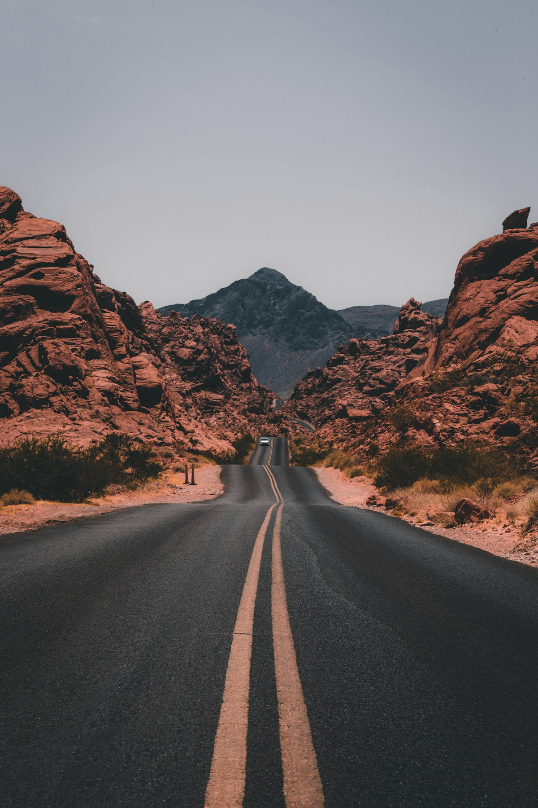
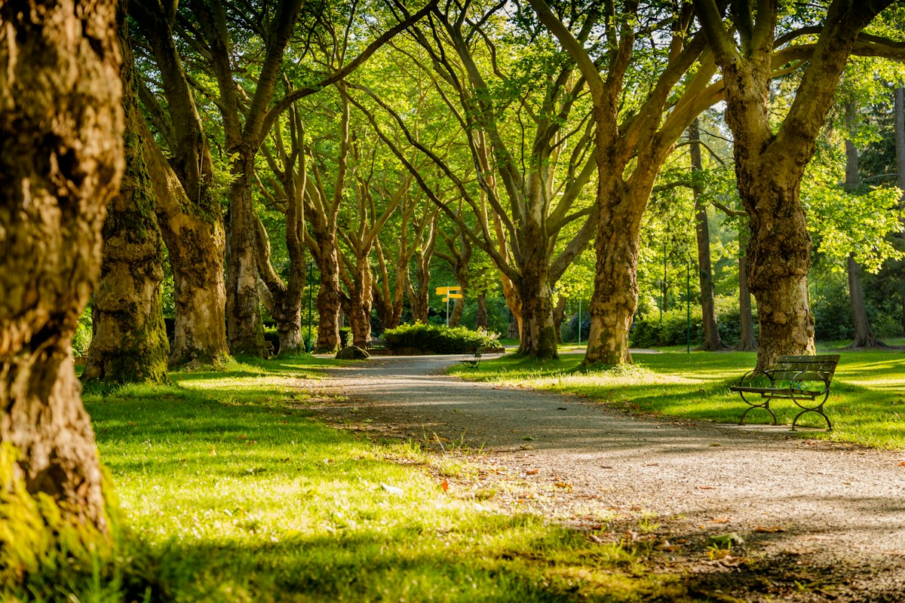
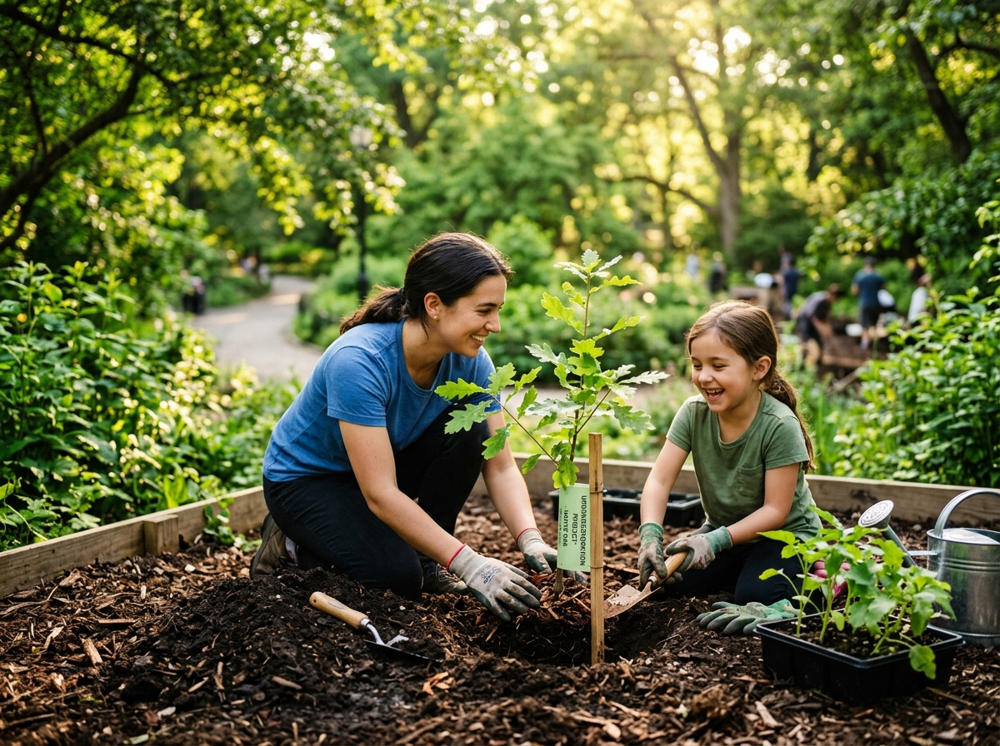
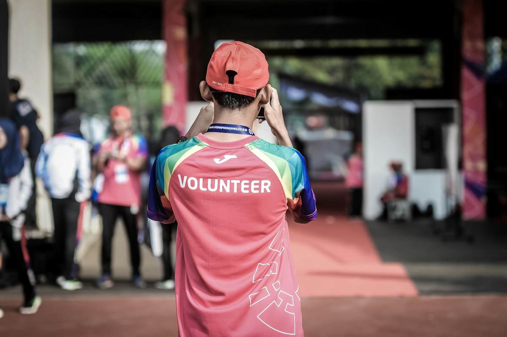

Make room for nature in cities.
Urban Forest brings together residents, volunteers, organizations and local partners to create lasting green infrastructure.
Restoration built around people and place.
Every project combines local knowledge, suitable species and long-term stewardship.


Native First
We prioritize species suited to local conditions and restoration goals.
Community Led
Local residents are partners in planning, planting and care.
Long Horizon
We measure success through the years that follow planting.
From planting days to growing forests.





Four stages of restoration.
Plan for trees that thrive.
We listen to local priorities, design practical planting plans, restore together and measure results over time.
See Our Approach
Listen
Understand local environmental and community priorities.
Design
Develop practical planting and maintenance plans.
Restore
Bring trained teams and community volunteers together.
Measure
Monitor tree survival and document restoration progress.
Restoration becomes permanent when people see trees as part of their future.
Community-led planting creates a stronger connection between environmental action, neighborhood identity and long-term care.
Meet The Community
Small planting days can shape lasting public spaces.
From school grounds and neighborhood streets to shared green corridors, every restored site adds another piece to a healthier urban landscape.
Follow the growth of the movement.
Receive occasional updates about planting events, restoration milestones and community projects.